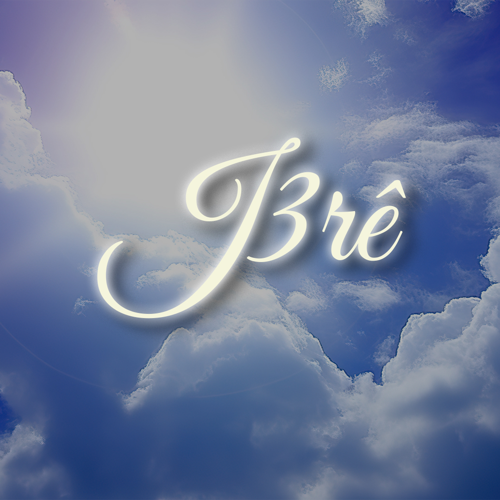

Asafes Collective, é um grupo de amigos que se juntaram, com o objetivo de levar o IDE de Cristo
através do trap gospel. Para saber mais, clique aqui.
Asafes Collective, é um grupo de amigos que se juntaram, com o objetivo de levar o IDE de Cristo
através do trap gospel. Para saber mais, clique aqui.

Um dos criadores do grupo, J3rê começou no Trap Gospel com seus 15 anos, e desde seu primeiro single nomeado de "Abençoado", não parou de
levar a palavra de Deus através do trap.
Para saber mais, clique aqui.